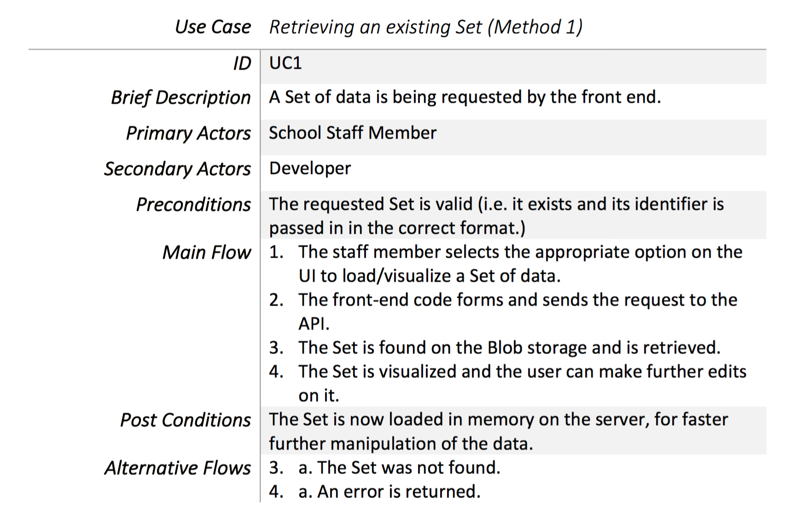

Gathering Requirements
Towards the end of first term we received a
project description
from our clients. It was really difficult to communicate with our clients to determine the sets of
requirements as they were not very reponsive.
From what we gathered from Team 1, the client required a backend that transferred the data to the
frontend efficiently.
We managed, with the assistance from Dr. Strange, to arrange a meeting with a developer from SIMS on
12 January along with Team 1. During this meeting
the developer taught us about the set system. He described to us that their system currently
generates a database of sets and uses a chart engine to generate charts from the database of sets.
The system does not need to know what the database looks like in order to generate sets.
Initial Requirements
Functional Requirements:
- Create a storage system to store sets
- A program to generate sets without knowing the structure of the database
- A program to write data a to storage system in a structured format
- Create sets based on the data in a database
- A program to read data from the storage system that can be used in many different programs
- A systematic method of retrieving sets from the storage system
- An efficient way to send data to Team 1
- A fast method to transfer data
Non-functional Requirements:
- Scalable design for REST Service
- Scalable design for Set Engine
- Protect personal data in the database
Based on the lists of requirements above we designed the following system to meet the client's requirements
-
REST API:
We decided to use the REST API to send data to Team 1 because of its robustness and relative easy learning curve. In addition Visual Studio also has many skeleton projects and general purpose support for backend REST services.
-
Interpretation Engine
The interpretation engine is a system that interprets GET requests sent from Team 1 by mapping the requests to a set in the set database. It reads from the set database and returns the set to the REST controller.
-
Set Engine
The set engine includes a database connector which connects to a specified database. It reads data from the database and creates sets using information from the database. The Set Engine does not need to know the stucture of the database to craete the sets.

Figure 1: Schematic diagram to show the overview of our proposed system
User Friendliness
We also carefully considered how the user will interact with our API. One of the major drawbacks to APIs is the learning curve required to use the API. We therefore decided to make a simple three step process (click-copy-paste) for the user so they can get started with the API as soon as possible. (See Figure 2)

Figure 2: Storyboard showing the three step process to get started with the API.
Final Requirements
Based on feedback from Team 1 and SIMS we added several extra requirements
Additional Functional Requirements:
- A Chart Engine to generate charts
- The Set Engine to generate a map of the storage system
- Splitting of sets into further subsets
- ZIP/UDP methods of transmitting data
- Set Engine to be able to read from multiple databases
Additional Non-functional Requirements:
- Chart Engine to have a scalable design
- Provide a documentation introducing how to use the API
We decided to integrate the Interpretation Engine with the REST service because we were over
complicating the process of retrieving sets. By creating a map of the set storage we can retrieve
any set using a 1 to 1 mapping which is much simpler no parsing is required.
We decided to
include a Chart Engine in our system because Team 1 are generating charts in Javascript once they
receive the sets from the REST endpoint. This can be exceptionally slow as Javascript is much slower
than C# and sending a simple Chart object in JSON takes much less time than sending sets that
contain potentially millions of data points.
Based on the final requirements, we updated the diagram

Figure 3: Schematic diagram to show the overview of the final system
MoSCoW Functional and Non-Functional Requirements
| Type | ID | Description | Functional | Status |
|---|---|---|---|---|
| Must Have |
M0 M1 M2 M3 M4 M5 M6 M7 M8 |
Final set of deliverables including a website, video and any other related content. A database for storing sets The Set Engine can generate sets without knowing the structure of a database. The Set Engine can push sets to the set database in a structured format. The Set Engine can split sets into further subsets. A REST service for developers. The REST Controllers must be able to retrieve any set in the set database. Libraries to read and write from the chosen storage system for the database. Scalable design for each component. |
Non-Functional Functional Functional Functional Functional Functional Functional Functional Non-Functional |
Complete Complete Complete Complete Complete Complete Complete Complete Complete |
| Should Have |
S1 S2 S3 S4 S5 S6 S7 S8 |
API allows Team 1 to perform basic requests. Experiment with UDP as a method of data transfer. Experiment with ZIP as a method of data transfer. Experiment with any other methods to transport data to Team 1 effectively. Experiment with different methods to generate charts as fast as possible. The REST Service to support retrieval of ZIP files. The REST Service to support retrieval of Graph objects in JSON. Chart Engine that can create Chart Objects in the backend. |
Functional Non-Functional Non-Functional Non-Functional Non-Functional Functional Functional Functional |
Complete Complete Complete Complete Complete Complete Complete Complete |
| Could Have |
C1 C2 C3 C4 C5 C6 C7 C8 |
Set Engine to support multiple databases. Set Engine to generate a map of the storage system. Set Engine to generate size tags for sets A tool to generate sample databases. Provide a documentation introducing how to use the API. Automated emailing system for the Set Engine. Testing different solutions after main solution is implemented Unit testing. |
Functional Functional Functional Functional Functional Functional Non-Functional Functional |
Not Complete Complete Complete Complete Complete Complete Complete Complete |
| Won't Have |
W1 W2 W3 |
The project must not be developed using .NET 4.0 or below. The project must not use technology that is depreciated. The project must not use only one method of approach. |
Non-Functional Non-Functional Non-Functional |
Not Complete Not Complete Not Complete |
Use Cases
We developed use cases that predict typical event paths that could happen when developers use our API. (See Figure 4)


Figure 4: Use case diagrams
Persona
After working closely with Team 1 we considered the various parties whom would be interested to use the API. From the meetings with Team 1 and SIMS we have created personas of people who would show interest in the API.
Persona 1

Persona 2